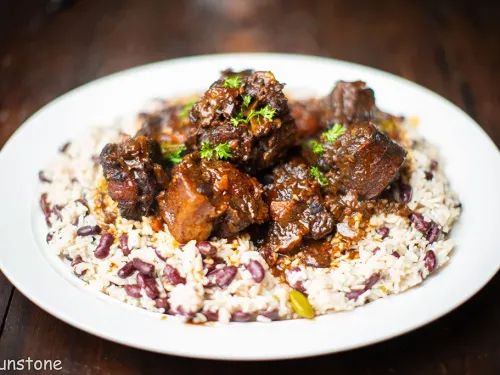

Oxtail & Beans Rice

Description
Oxtail and beans rice is a hearty dish made with tender oxtail meat, cooked until it falls off the bone, served over a bed of fluffy rice and beans. The dish is often seasoned with spices and herbs, making it a flavorful and comforting meal.
Ingredients
- Oxtail
- Beans (Red Beans)
- Rice
- Onions
- Tomatoes
- Bell Peppers
- Chili Peppers
- Vegetable Oil
- Salt
- Maggi
Steps
- Clean the oxtail and season it with salt, Maggi, and spices.
- In a pot, heat vegetable oil and sauté onions until translucent.
- Add the oxtail and brown it on all sides.
- Add chopped tomatoes, bell peppers, and chili peppers to the pot.
- Cover and let it simmer until the oxtail is tender.
- In a separate pot, cook the beans until soft.
- Cook rice according to package instructions.
- Serve the oxtail over a bed of rice and beans.
- Garnish with additional vegetables if desired.
Optional
Some people like to add a sauce made from tomatoes, onions, and chili peppers to enhance the flavor of the dish.